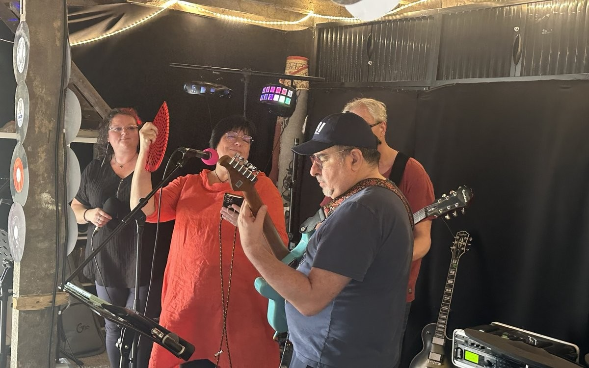
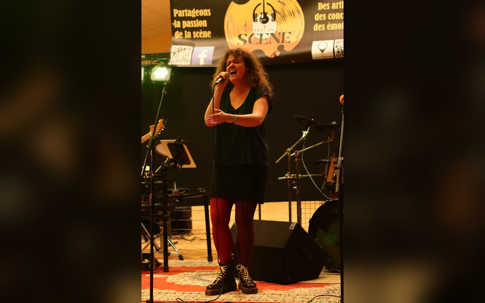
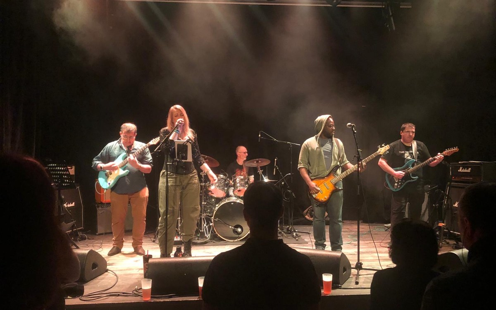
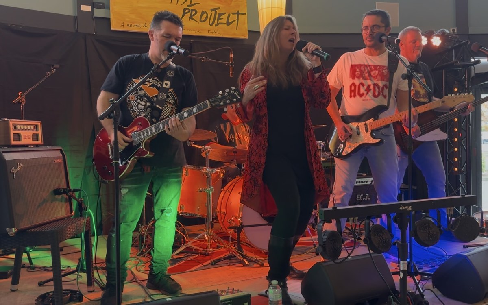
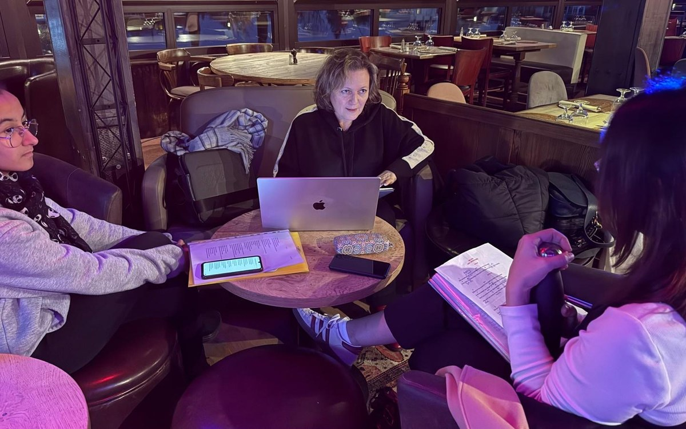
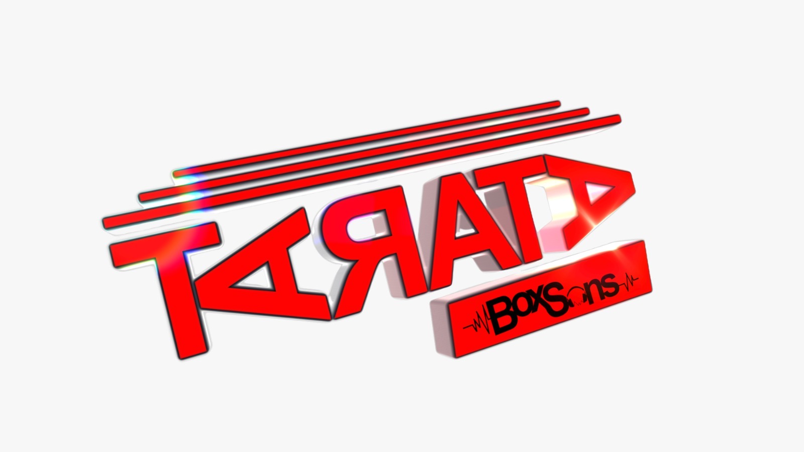
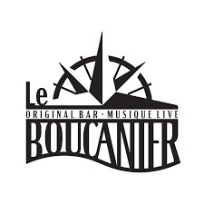

Nos artistes & groupes
Des univers musicaux variés, des talents à découvrir et à faire jouer.
Explorer le catalogue →Guerville · Yvelines (78)
L'association musicale de Guerville pour tous les passionnés !
Rencontrer, jouer, partager, découvrir et vibrer ensemble. Parce que la musique est avant tout une aventure humaine !
Tous en Scène est une association musicale basée à Guerville, dans les Yvelines (78).
Notre mission est de réunir les passionnés de musique, chanteurs et instrumentistes, de tous âges et de tous niveaux.
Musiciens amateurs, semi-professionnels, professionnels et intermittents du spectacle : chacun a sa place parmi nous.
Nous défendons une pratique musicale ouverte, conviviale et sans élitisme, fondée sur le partage, la collaboration et l'entraide.
Ensemble, faisons vivre la musique et donnons à chacun l'envie de monter sur scène !
Des rencontres musicales aux concerts, découvrez les différentes façons de vivre la musique avec nous.

Jouer, improviser et partager de bons moments musicaux.
Voir nos bœufs et scènes ouvertes →
Oser monter sur scène et partager son univers musical.
Voir nos bœufs et scènes ouvertes →
Faire découvrir les groupes et les talents de notre territoire.
Découvrir →
Des collaborations artistiques et audiovisuelles pour faire rayonner les talents de notre territoire.
Découvrir nos partenariats →
Apprendre, progresser et développer sa présence artistique.
Découvrir →Découvrez les artistes, revivez nos événements et partagez l'énergie de la scène locale.
Des univers musicaux variés, des talents à découvrir et à faire jouer.
Explorer le catalogue →Concerts, bœufs musicaux et événements : revivez les meilleurs moments.
Voir la galerie →Retrouvez notre dossier de presse, notre catalogue artistique et les informations utiles.
Consulter les documents →Concerts, jam sessions, scènes ouvertes, ateliers et rencontres musicales : retrouvez toute notre actualité !
Apprendre, expérimenter et progresser ensemble dans une ambiance conviviale !
Découvrez nos ateliers et retrouvez toutes les informations sur HelloAsso.
Développez votre créativité et apprenez à mettre vos idées en paroles.
Voir l'atelierTravaillez votre présence sur scène, votre expression et votre confiance.
Voir l'atelierTravaillez la prononciation, l'interprétation et l'aisance en anglais.
Voir l'atelierNos partenaires contribuent à créer des rencontres, accompagner les artistes et faire rayonner la musique locale.

Une collaboration autour des émissions musicales et de la réalisation audiovisuelle pour mettre en lumière les talents du territoire.

Un lieu partenaire qui accueille des ateliers artistiques et favorise les rencontres musicales.
Une seule adhésion pour rejoindre notre aventure et soutenir la vie musicale locale.
Participez à la dynamique associative, rencontrez d'autres passionnés et découvrez nos activités.
🧡 J'adhère à Tous en ScèneUne question, une idée de collaboration ou un projet musical ? Contactez-nous !
📍 Guerville – Yvelines (78)
✉️ tousensceneguerville@gmail.com
📸 Instagram : @tousensceneguerville
🎵 Facebook : Tous en Scène